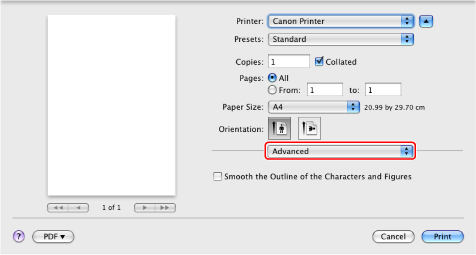
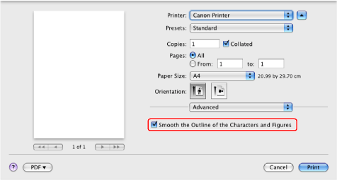

Smoothing the Outline of the Characters and Figures
You can smooth the outline of the characters and figures when printing.
1.
From the [File] menu of the application software, select [Print].
The [Print] dialog box is displayed.
2.

3.
Select [Smooth the Outline of the Characters and Figures].

4.
Click [Print].